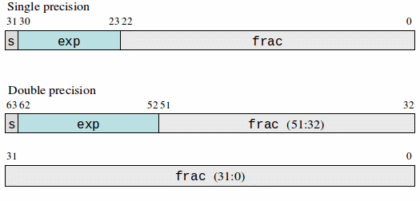

C Standards
C types.
Pointers and arrays.
Using and understanding the limitations of typedef's.
Complex declarations.
ADTs.
OOP in C.
C idioms.
Using asymmetric bounds.
External variable declarations.
Using data instead of code.
Name spaces
Dynamic memory allocation.
The C preprocessor.
#include <stdio.h>
int main()
{
printf("Hello, World!\n");
return 0;
}
#include includes actual textual content on stdio.h header file in
compilation unit.
stdio.h provides a declaration for printf().
return 0 returns success exit code to OS (non-0 indicates failure).
Not required by C11.
A typical C compiler is usually set up as a driver program which runs other separate programs. For example, with gcc:
gcc -E Textual transformation of source file: handles #include
directives, #define macro expansion and #if/#ifdef/#ifndef
conditional compilation.
cc1 Compiled *.c C file to *.s assembly language file.
as Assembles *.s assembly language file to *.o object file.
The object file is a binary file in a specific format which
exports certain symbols and imports symbols it depends on.
ld Links several object files together with libraries to produce an executable. There are two kinds of linkers:
Static linker: Links in all code and produces a fully self-contained executable.
Dynamic linker: Links in all the object files but only links in references to the libraries. The executable is not self-contained and the libraries will be linked in when the executable is run.
Most modern systems use Dynamic Linked Libraries (DLLs). There
are disadvantages like
DLL Hell, but has big advantages like smaller executables and
the possibility of having multiple concurrently executing programs
share the same library code in memory (AKA Dynamic Shared
Objects, explaining the .so library extension used in Unix).
File main.c:
#include "f1.h"
#include "f2.h"
#include <stdio.h>
#include <stdlib.h>
int main(int argc, const char *argv[]) {
int a = atoi(argv[1]);
int b = atoi(argv[2]);
printf("value is %d\n", f1(a, b) + f2(a, b));
return 0;
}
File f1.c:
#include "f1.h"
int f1(int a, int b) {
return a + b;
}
File f2.c:
#include "f2.h"
int f2(int a, int b) {
return a * b;
}
No standard. Described in first edition of Kernighan and Ritchie's The C Programming Language, 1978. Several incompatible implementations.
1989. Major change included addition of function
prototypes; minor change included # and ## preprocessor
operators. The language described in the 2nd Edition of The C
Programming Language, aka K&R2.
Basically ANSI-C.
Amendment 1 to ISO-C, 1994. Additions for
internationalization (I18N) and localization (L10N) with additions
for multibyte and wide chars.
Approved end of 90's. // comments, anywhere declarations,
inline functions, macro varargs, _Bool constants true and
false, named struct initialization, variable length arrays,
struct hack where last member of struct is an incomplete
array type standardized, etc. Implementations close to complete.
Features include removal of gets(), multithreading support,
alignment specification.
C11 fixes.
In order of non-decreasing size char, short,
int, long, long long. Signed by default, can be made
unsigned by using modifier unsigned (but the signed-ness of
plain unmodified char is undefined). Examples (initializers can
be omitted, but are usually a good idea whenever possible to avoid
uninitialized variable errors):
unsigned char c1 = 'a', c2 = 'b';
char c = c1 + 1; //signed-ness not known.
//suffixes on literals indicate type of literal.
long long length = 1024LL;
unsigned int index = 0;
Exact sizes for integral types are implementation defined, but
char is 1 unit of at least 8-bits (usually a byte), short is
at least 16 bits, int is at least 16 bits (often 32 bits),
long is at least 32 bits and long long is at least 64 bits.
char and short are largely memory types; widened to int when
doing arithmetic or when passed to functions without a prototype.
Most architectures use
two's
complement for representing signed integers. Results in
asymmetrical ranges: for example, -128 to +127 for 8-bit and
-32768 to +32767 for 16-bit.
Arithmetic operators +, - (unary and binary), *, /,
all left-associative with * and / having higher precedence
than +, -.
Bitwise operators and &, or |, complement ~.
Shift operators << and >>.
From arith-bit-ops.c:
//associativity and precedence
printf("1-2-3 = (1-2)-3 = %d, "
"2 + 6*5/3 = 2 + ((6*5)/3) = %d\n",
1-2-3, 2 + 6*5/3);
//1-2-3 = (1-2)-3 = -4, 2 + 6*5/3 = 2 + ((6*5)/3) = 12
//integer division truncates towards 0
printf("10/4 = %d, -10/4 = %d\n", 10/4, -10/4);
//10/4 = 2, -10/4 = -2
//remainder has sign of dividend
//concatenation of adjacent string literals
printf("10%%4 = %d, -10%%4 = %d, "
"10%%-4 = %d, -10%%-4 = %d\n",
10%4, -10%4, 10%-4, -10%-4);
//10%4 = 2, -10%4 = -2, 10%-4 = 2, -10%-4 = -2
From arith-bit-ops.c:
//& bitwise-and; | bitwise-or;
printf("3|5 = %d, 3&5 = %d\n", 3|5, 3&5);
//3|5 = 7, 3&5 = 1
//~ does bitwise complement, %x prints hex
printf("~0 = %d = 0x%x, ~-1 = 0x%x\n", ~0, ~0, ~-1);
//~0 = -1 = 0xffffffff, ~-1 = 0x0
//<< left-shift; >> right-shift;
//u-suffix on literal makes it unsigned
printf("7 << 3 = 0x%x, ~0 << 2 = 0x%x\n"
"~0 >> 2 = 0x%x, ~0u >> 2 = 0x%x\n",
7 << 3, ~0 << 2, ~0 >> 2, ~0u >> 2);
//7 << 3 = 0x38, ~0 << 2 = 0xfffffffc
//~0 >> 2 = 0xffffffff, ~0u >> 2 = 0x3fffffff
Floating point types: in order of non-decreasing size float,
double, long double.
float result = 0.0;
const long double pi2 = 2 * PI;
On most architectures, floating point types use
IEE 754 format:
float being 32-bit single-precision, double being 64-bit
double-precision, long double or IEEE 128-bit
quadruple-precision. On x86 long double may be a 80-bit
extended double.
IEEE-754 consists of a MSB containing a sign bit \(S\) (0
positive, 1 negative), a biased exponent field \(E\) and a
fraction field F.
The value of a normalized number is
\[ -1^S \times 2^{(e-\texttt{bias})} \times (1 + f) \]where \(e\) is the value of the exponent field as an unsigned binary integer and \(f\) is the value of the fraction field as a fractional binary number.
Formats:

Two representations for zero: +0 and -0.
Exponent field of all zeros and non-zero fraction used to indicate denormalized numbers allowing gradual underflow.
Exponent field of all ones allows representations for \(\pm\infty\)
and Not-A-Number NaN. A NaN does not compare equal to any value,
including itself; i.e. NaN == NaN is always false.
If T is a type, then T[] is of type array of T (corresponds
to a sequence of types T). Note that the number of elements in the array
is not part of the type. No multi-dimensional arrays but can have
array of arrays. Examples:
int a[10]; // uninitialized
// (unless static (top-level) then 0).
// # of elements determined by initializer (recommended).
double piMults[] = { PI, 2 * PI, 3 * PI };
// uninitialized array of 5 array's of 10 floats.
float multi[5][10];
// a 2x2 unit matrix
double unit2[][2] = { { 1, 0, }, { 0, 1, }, };
// a 3x3 unit matrix using c99 designated initializers
// unspecified elements initialized to 0.
double unit3[3][3] =
{ [0][0] = 1, [1][1] = 1, [2][2] = 1};
C does not have any string type. However, it does have string
literals which are represented as a sequence of characters or escape
sequences within double quotes. Those literals stand for the array of
character codes for the characters specified by the sequence followed
by the NUL-character '\0'.
char hello[] = "hello"; // sizeof(hello) == 6
// sizeof(message) == 5
// possible error, no terminating '\0'
char message[] = { 'h', 'e', 'l', 'l', 'o' };
For this course we are ignoring wide characters, wide character strings, and C support for Unicode.
The sizeof operator returns the number of char's (bytes) occupied
by a variable or type. Return type is of a library-defined type size_t.
In sizeof.c:
int main() {
// %zu used for print size_t
printf("sizeof short = %zu\n", sizeof(short));
printf("sizeof int = %zu\n", sizeof(int));
printf("sizeof float = %zu\n", sizeof(float));
printf("sizeof double = %zu\n", sizeof(double));
const char hello[] = "hello";
printf("sizeof \"hello\" = %zu\n", sizeof hello);
const char message[] = {'h', 'e', 'l','l', 'o' };
printf("sizeof {'h', 'e', 'l','l', 'o' } = %zu\n",
sizeof message);
}
Results on my computer (sizeof primitives could be different on other computers):
sizeof short = 2
sizeof int = 4
sizeof float = 4
sizeof double = 8
sizeof "hello" = 6
sizeof {'h', 'e', 'l','l', 'o' } = 5
It is always the case that sizeof(T a[n]) == n*sizeof(T).
Consider array a[] declared as:
T a[] = { ... };
The number of elements in the array is given by the expression:
sizeof(a)/sizeof(T)
or equivalently:
sizeof(a)/sizeof(a[0])
Could use idiom as:
T a[] = { ... };
int i;
for (i = 0; i < sizeof(a)/sizeof(a[0]); i++) {
...
}
or could package up the idiom in a macro:
#define N_ELEMENTS(a) (sizeof(a)/sizeof(a[0]))
Note that this idiom works only for static or auto allocated arrays. It
will not work for dynamically allocated arrays.
If T1, T2, ... Tn are types, then struct { T1 t1; ...
Tn tn; } is a structure type (corresponds to cartesian product of
types T1 \(\times\) T2 \(\times \ldots \times\) Tn).
The fields t1, ..., tn laid out sequentially in memory (with
possible padding in between to respect alignment restrictions).
Examples:
typedef struct { // typedef alias for type
double x;
double y
} Point2;
// can be used for singly-linked list node
typedef struct _Node { //_Node is struct tag
void *value;
struct _Node *next;
} Node;
// positional initialization
Point2 line[] = { { 0, 0 }, { 1, 1 }, };
// preferably use c99 designated initializer
Point2 triangle[] = {
{ .x = 0, .y = 0 },
{ .y = 1, .x = 0 },
{ .x = 1, .y = 0 }
};
On many architectures like ARM or RISC-V, primitive types are required to be aligned on an address divisibly by their size. On other architectures (like x86) alignment is necessary for performance.
A C compiler will typically insert padding between structure fields to respect the alignment restrictions of the target architecture.
Since we can have an array of structures, the compiler will also insert padding at end of a structure to ensure that alignment restrictions are also respected for the fields within an array.
A C compiler is not allowed to change the order of the fields in a structure to minimize padding, but the programmer can do so.
In align.c:
typedef struct {
int i;
char c; //pad 3
double d;
char arr[3]; //pad 5
} BadAlign;
//static ensures not visible outside this file
static BadAlign bads[4];
typedef struct {
char c;
char arr[3];
int i;
double d;
} GoodAlign;
static GoodAlign goods[4];
In align.c:
int main() {
printf("BadAlign: i@%zu, c@%zu, d@%zu, arr@%zu\n"
"sizeof(BadAlign) = %zu, sizeof bads = %zu\n",
offsetof(BadAlign, i), offsetof(BadAlign, c),
offsetof(BadAlign, d), offsetof(BadAlign, arr),
sizeof(BadAlign), sizeof bads);
printf("GoodAlign: c@%zu, arr@%zu, i@%zu, d@%zu\n"
"sizeof(GoodAlign) = %zu, sizeof goods = %zu\n",
offsetof(GoodAlign, c), offsetof(GoodAlign, arr),
offsetof(GoodAlign, i), offsetof(GoodAlign, d),
sizeof(GoodAlign), sizeof goods);
}
Log on my computer:
BadAlign: i@0, c@4, d@8, arr@16 sizeof(BadAlign) = 24, sizeof bads = 96 GoodAlign: c@0, arr@1, i@4, d@8 sizeof(GoodAlign) = 16, sizeof goods = 64
If T1, T2, ... Tn are types, then union { T1 t1;
... Tn tn; } is a union type (corresponds to undiscriminated
union of types T1, T2, \(\ldots\), Tn.
Fields t1, ..., tn are overlayed in memory. At any time, only
one of T1, ..., Tn can exist in the union.
Consequently, the sizeof the union is the size of the largest
Ti.
Undiscriminated union means that the compiler does not track
which variant of the union is currently stored. This is as
opposed to sum
types (increasingly popular in modern programming languages)
which do track the currently stored variant.
A union can often be used where inheritance would be used in
OO-languages. Pair with an enum to allow runtime discrimination
of variants. Example:
typedef struct {
enum { CIRCLE, RECTANGLE, ... } type;
union {
struct {
Point2 origin;
double radius;
} circle;
struct {
Point2 topLeft;
double width;
double height;
} rectangle;
...
}; //anonymous union from c11
} Shape;
double sum_areas(Shape shapes[], int numShapes) {
double sum = 0.0;
for (int i = 0; i < numShapes; i++) {
switch (shapes[i].type) {
case CIRCLE:
sum += PI * shapes[i].circle.radius
* shapes[i].circle.radius;
break;
case RECTANGLE:
sum += shapes[i].rectangle.width
* shapes[i].rectangle.height;
break;
...
}
}
return sum;
}
Different architectures lay out the bytes within primitive types in different orders.
Two main endian variants:
Most significant bytes are at lower address.
Least significant bytes are at lower address.
(Names originate from Jonathan Swift's A Voyage to Lilliput, Chapter IV, Gulliver's Travels, popularized by Danny Cohen in this article published in IEEE Computer magazine in 1981).
Little endian most common in present popular architectures.
Most networks transmit bytes in big endian order.
The only place where endianness makes a difference in C is when using
bit-fields within a struct.
The following code uses the fact that a union is undiscriminated
to perform type punning
(accessing a variable having one type as another type):
int main() {
union {
unsigned u;
struct {
// bit fields of size 4
unsigned u1: 4;
unsigned u2: 4;
unsigned u3: 4;
unsigned u4: 4;
unsigned u5: 4;
unsigned u6: 4;
unsigned u7: 4;
unsigned u8: 4;
};
} u =
{ .u1 = 0xd, .u2 = 0xe, .u3 = 0xa, .u4 = 0xd,
.u5 = 0xb, .u6 = 0xe, .u7 = 0xe, .u8 = 0xf,
};
printf("unsigned u = 0x%x\n", u.u);
}
Log on x86 (little endian):
unsigned u = 0xfeebdaed
Log on mips (big endian)
# cross-compile on x86 for the MIPS RISC architecture
$ mips-linux-gnu-gcc bit-fields.c \
-o mips-bit-fields -static
$ ./mips-bit-fields
unsigned u = 0xdeadbeef
A pointer is nothing but a variable which holds a memory address.
If T is a type, then T * is of type pointer to T.
Examples:
int i = 22;
int *iP = &i; //prefix & takes address
int j = *iP; //dereference iP; j == 22
*iP = 42; //changes i; Note *iP aliases i
const int *icP = &i; //value pointed to cannot be
//changed via pointer
int *const ciP = &i; //pointer cannot be changed.
*iP = NULL; //iP is now invalid
If p is declared to be a pointer T *p, then p is an
address and *p dereferences the pointer returning
the value pointed to of type T.
On modern architectures, all pointers have the same size (irrespective of the pointed-to type): 4 bytes on 32-bit architectures and 8 bytes on 64-bit architectures.
In any running program code and data entities have lifetimes: the time between when the entity comes to life and the time when it dies.
Lifetimes can be classified into three categories:
The entity is alive for the entire runtime of the program.
Typically allocated in a static memory area. In C, all code
and top-level data or data explicitly declared using the
static keyword have program lifetimes and the entity
is allocated statically (before runtime).
The entity is alive only while a block is executing. Typically
allocated on a stack. In C, all data entities declared within
a block without the static keyword have block lifetimes.
A lifetime which does not fit within the above categories.
Typically allocated on a heap. In C, such entities are
allocated using malloc() and friends.
//static allocation
const char *GREET = "hello";
const char *greetMsg(const char *greetee)
{
//manual heap allocation
char *msg = malloc(strlen(GREET) + 1 + strlen(greetee) + 1);
sprintf(msg, "%s %s", GREET, greetee);
//return heap allocated message
return msg;
}
int main() {
//stack allocation
const char greetee[] = "world";
//msg will point to heap
const char *msg = greetMsg(greetee);
printf("%s\n", msg);
//manual heap deallocation
free((void *)msg); //cast to remove const
return 0;
}
High Addresses
+-----------------------------+
| Env + command-line args |
+-----------------------------+
| |
| Stack |
| |
+------------+----------------+
| | |
| | |
| v |
| |
| DLLs |
| |
| ^ |
| | |
| | |
+------------+----------------+
| |
| Heap |
| |
+-----------------------------+
| |
| Uninitialized Static Data |
| (bss) |
+-----------------------------+
| |
| Initialized Static Data |
| |
+-----------------------------+
| |
| Program Code (text) |
| |
+-----------------------------+
Low Addresses
Different layout under Windows (stack and heap grow away from each other, rather than towards each other).
In addrs.c:
static char strSpace[1000];
static char msg[] = "hello";
//argv[argc] program arguments
//(includes executable name in argv[0])
int main(int argc, const char *argv[]) {
char *ptr = malloc(argc * sizeof(char *));
char *home = getenv("HOME");
int vals[10];
printf("%p: &main (code)\n", &main);
printf("%p: &msg (initialized data)\n", &msg);
printf("%p: &strSpace (uninitialized data)\n\n", &strSpace);
printf("%p: ptr (heap data)\n\n", ptr);
printf("%p: &argv (block data)\n", &argv);
printf("%p: &argc (block data)\n", &argc);
printf("%p: &ptr (block data)\n", &ptr);
printf("%p: &home (block data)\n", &home);
printf("%p: &vals (block data)\n\n", &vals);
printf("%p: &argv[0] (commmand-line arg)\n", &argv[0]);
printf("%p: home (env var)\n", home);
free(ptr);
}
0x56faf6cb11c9: &main (code) 0x56faf6cb4010: &msg (initialized data) 0x56faf6cb4040: &strSpace (uninitialized data) 0x56faf75df2a0: ptr (heap data) 0x7ffd3371ad20: &argv (block data) 0x7ffd3371ad2c: &argc (block data) 0x7ffd3371ad30: &ptr (block data) 0x7ffd3371ad38: &home (block data) 0x7ffd3371ad40: &vals (block data) 0x7ffd3371ae98: &argv[0] (commmand-line arg) 0x7ffd3371d3b7: home (env var)
void KeywordThe void keyword is used for several purposes in C:
If a function does not return any value then the return type
of that function is declared as returning void as in:
//flush buffered output to stream
void fflush(FILE *stream);
If a function does not take any arguments, then its parameter
list is declared void as in:
int rand(void); //returns a random integer
Note that in C, int f() species that f refers to a function
which takes unspecified arguments (unspecified in number and
type).
To declare a pointer to an unknown type as in void *p.
void *malloc(size_t n); //allocate n bytes on heap
//and return a pointer to it.
void * pointers can be passed between functions but it is an error
to dereference one. Commonly used to represent generic objects in C
(the same role that Object plays in languages like Java).
Declared in <stlib.h>.
void *malloc(size_t n) Return pointer to n bytes of freshly allocated memory. The
contents of the memory is not initialized. Returns NULL on
failure.
void *realloc(void *p, size_t n) Resize previously allocated block of memory pointed to by p to
n bytes and return a pointer to the resized block. The contents of
the old block is copied bitwise to the new block.
Returns NULL on failure.
void *calloc(size_t nElements, size_t size) Allocate contiguous memory for nElements having size size and
return a pointer to the freshly allocated memory. The contents of
the returned block is set to 0. Returns NULL on failure.
void free(void *p) Free previously allocated block of memory pointed to by p.
Incorrect use of memory allocation routines can result in obscure bugs and security problems.
Results in memory leaks. Can be a major issue with long running programs like servers.
Calling free() multiple times for the same allocation. Can
result in obscure bugs and corrupting the allocator.
Passing a pointer not obtained from the allocation routines to
free() or realloc() can result in obscure bugs and corrupting
the allocator.
Only operations for an array are getting its size or obtaining a pointer to element 0 of the array. All other array ops are really pointer ops.
The use of an array name in an expression (not declaration) is treated by the compiler as a pointer to the first element of the array.
A subscript is always equivalent to an offset from a pointer.
a[i] is equivalent to *(a + i) which is equivalent to *(i +
a) which is equivalent to i[a].
int a[10];
int *p = a; //point to a[0]
a[2] = 42; //assign third element
*(p + 2) = 42; //same as previous statement
p++; //p == &a[1]
*p = 22; //a[1] = 22
p += 4; //p = &a[5]
*(p + 1) = 99; //a[6] = 99
An array name in the declaration of a function parameter is treated by the compiler as a pointer to the first element of the array. This is because arrays are passed by reference for efficiency reasons (all non-array data are passed by value).
Since arrays are passed as pointers to functions, the function does not know how many elements there are in the array. Alternatives:
Pass number of elements explicitly.
int main(int argc, const char *argv[]);
Use a special sentinel value to indicate end of array
//last entry of argv[] contains NULL pointer //as sentinel int execv(const char *pathname, char *argv[]);
Use program logic to determine # of array elements.
//sort elements of array between begin //(inclusive) and end (exclusive). //# of elements is end - begin. //(this idiom is heavily used in C++'s //Standard Template Library STL). void sort(int *begin, int *end)
Since arrays do not know their size, it is possible to index beyond the bounds of the array:
enum { N = ... }
int a[N];
...
for (int i = 0; i <= N; i++) {
//writes beyond end of array in last iteration
a[i] = 0;
}
Errors like the above can be prevented by consistently using inclusive lower bounds and exclusive upper bounds:
for (int i = 0; i < N; i++) { ... }
In general, using pointer arithmetic can result in these kind of buffer overflows or buffer underflows.
Assume we are looking for key in int a[n]. Alternate ways of coding loop:
for (int i = 0; i < n; i++) {
if (a[i] == key) return i;
}
for (int i = 0; i < n; i++) {
if *(a + i) == key) return i;
}
int *begin = a;
int *end = &a[n]; //one beyond end, legal in C
for (int *p = begin; p < end; p++) {
if (*p == key) return p - begin;
}
Pointers are used for two purposes:
To point to a memory area containing a single entity. Performing arithmetic on such a pointer does not make sense:
int i = 22; int *iP = &i; iP++; //??
To point to a memory area containing multiple entities. Performing arithmetic on such pointers does make sense:
int a[] = {1, 2, 3};
int *p = &a;
p++; //makes sense, points to p[1]
Even though void f(int *p) and void f(int p[]) are equivalent,
have convention of using the former when p is a pointer to a single
entity and the latter when p is a pointer to multiple entities.
void single(int *p) {
p[1] = 42; //should raise a red flag for a reader
//who understands the convention
}
void multi(int p[]) {
p[1] = 42; //probably okay
}
This is not a standard convention and some regard a T p[] parameter
declaration as bad style.
A string literal always represents a array of char terminated
with a \0.
char msg[] = "hello;" refers to array as msg:
msg: [ 'h', 'e', 'l', 'l, 'o', '\0' ]
sizeof(msg) == 6.
char *msg = "hello"; sets pointer to point to first
character of anonymous literal array:
msg --> [ 'h', 'e', 'l', 'l, 'o', '\0' ]
sizeof(msg) will be size of a pointer (4 on 32-bit machines,
8 on 64-bit machines).
It is wrong to have one file define char msg[] = "hello"; and another
file declare extern char *msg; as the compiler will generate different
access code.
If T, T1, T2, ... Tn are types, then the declaration T
f(T1, ... , Tn) declares f to be a function taking arguments
of types T1, T2, ... Tn and returning a value of type T.
Note the following:
Above types of declarations were not present in K&R C but added in ANSI-C as prototypes.
When declaring functions, parameters may or may not be named:
hence both void f(int i, int j); and void f(int, int);
declare f() to be a function taking two int arguments and not
returning any value.
If the argument list is specified as (), then it means taking
some unspecified number of arguments of unspecified type. Example:
double f(); means f() is a function taking some unspecified
number of arguments of unspecified type returning a double.
To indicate that a function takes no arguments use (void).
So void procedure(void); declares procedure() to be a
function which takes no arguments and does not return a result.
Functions can take a varying number of arguments, indicated using
ellipsis; example int printf(const char *fmt, ...);. Can be
defined portably using library stdlib.h. Usually number of
actual arguments specified by explicit arguments or by context.
Function types are not first-class: they cannot be stored in data-structures, passed as arguments to functions, or returned as function return types. However, pointers to functions can achieve those roles (consequently, it is impossible to define a function at runtime, but possible to pass around pointers to existing functions).
If T, T1, T2, ... Tn are types, then the declaration T
(*f)(T1, ... , Tn) declares f to be a function taking arguments
of types T1, T2, ... Tn and returning a value of type T.
Examples:
int f(void); //a function returning an int
int *f(void); //a function returning a pointer to an int
int (*f)(void); //a pointer to a function returning an int
//sort base[n*size] using comparison function compar to
//compare elements pointed to by p1 and p2: return >0, 0, <0
//if *p1 is >, ==, < *p2
void qsort(void base[], size_t n, size_t size,
int (*compar)(const void *p1, const void *p2));
The first programmer visible function run in a C program is main()
with declaration:
/** return program status: 0 for success, non-zero for error */ int main( /** # of command line args, including exec path */ int argc, /** command-line args array, actually const char **argv */ const char *argv[] );
Command-line args for ./t hello world where [ ] ---> indicates pointer:
argc: 3
argv: [ ] ---> [ ] ---> [ '.' '/' 't' '\0' ]
[ ] ---> [ 'h' 'e' 'l' 'l' 'o' '\0' ]
[ ] ---> [ 'w' 'o' 'r' 'l' 'd' '\0' ]
[ NULL ] //usually
Use qsort() in argv-sort.c to sort command-line arguments in non-ascending order:
int compare_geq(const void *p1, const void *p2) {
return strcmp(*(const char **)p2, *(const char **)p1);
//alternately:
//- strcmp(*(const char **)p1, *(const char **)p2);
}
int
main(int argc, const char *argv[])
{
const size_t nArgs =
argc - 1; //since argv[0] contains exec path
//variable-length array (VLA) where # elements
//determined at runtime
const char *args[nArgs];
memcpy(args, &argv[1], nArgs*sizeof(char *));
qsort(args, nArgs, sizeof(char *), compare_geq);
for (int i = 0; i < nArgs; i++) printf("%s\n", args[i]);
}
Log:
./argv-sort twas brillig and the slithy toves twas toves the slithy brillig and
An ADT hides the implementation of a data type. The data type is available to clients only via certain published operations.
Implemented in C using a *.h header file to make the ADT
syntactic specification available to clients.
The *.h header file can declare the ADT type as an opaque
incomplete struct.
The declarations in the header file for ADT operations use only pointers to the ADT type.
Since the size of a pointer always the same irrespective of the pointed to type, clients can be compiled without needing to know the details of the ADT type.
Implementation *.c file completes the definition of ADT type and
provides definitions for the operations.
Specification file
linked-list.h. Uses conditional compilation #ifndef idiom to
prevent header file being included multiple times within a single
compilation.
#ifndef LINKED_LIST_H_
#define LINKED_LIST_H_
//incomplete declaration
typedef struct _LinkedList LinkedList;
//all routines terminate program on error
LinkedList *make_linked_list(void);
void free_linked_list(LinkedList *list);
/** insert lowercase(str) into list, keeping list sorted in
* strictly ascending order (hence str not inserted if
* already present).
*/
void insert_linked_list(LinkedList *list, const char *str);
typedef void IterateFn(const char *str, void *ctx);
void iterate_linked_list(const LinkedList *list,
IterateFn *fn, void *ctx);
#endif //#ifndef LINKED_LIST_H_
Implementation file
linked-list.c maintains sorted list without duplicates. Uses
flexible
arrays (must be last field in struct).
//complete _LinkedList incomplete type
struct _LinkedList {
LinkedList *next;
char str[]; //flex array for NUL-terminated string chars
};
LinkedList *
make_linked_list(void)
{
return callocChk(1, sizeof(LinkedList));
}
void
free_linked_list(LinkedList *listHdr)
{
LinkedList *next;
for (LinkedList *p = listHdr->next;
p != NULL;
p = next) {
next = p->next; //copy p->next into p1 since
//p will become dangling ptr after free()
free(p);
}
free(listHdr);
}
void
insert_linked_list(LinkedList *listHdr, const char *str)
{
//allocate storage for flexible array too
//in single call to malloc().
LinkedList *newNode =
mallocChk(sizeof(LinkedList) + strlen(str) + 1);
//lower-case copy, return '\0' ptr
stpcpy_lc(newNode->str, str);
LinkedList *previous; //will insert after this
LinkedList *current; //will insert before this
for (previous = listHdr, current = listHdr->next;
current != NULL &&
strcmp(current->str, newNode->str) < 0;
previous = current,
current = current->next) {
}
if (current != NULL && strcmp(current->str, newNode->str) == 0) {
//str already in list, do not insert
free(newNode);
}
else {
//link in newNode between previous and current
previous->next = newNode;
newNode->next = current;
}
}
void
iterate_linked_list(const LinkedList *list,
IterateFn *fn, void *ctx)
{
for (const LinkedList *p = list->next; p != NULL; p = p->next) {
fn(p->str, ctx);
}
}
Client in main.c uses ADT to sort command-line arguments.
static void
print(const char *str, void *ctx)
{
fprintf((FILE *)ctx, "%s\n", str);
}
int
main(int argc, const char *argv[])
{
LinkedList *list = make_linked_list();
for (int i = 1; i < argc; i++) {
insert_linked_list(list, argv[i]);
}
iterate_linked_list(list, print, stdout);
free_linked_list(list);
}
# sorts with duplicate removal $ ./linked-list joe ann sue bill ann sue ann bill joe sue # sorts one element $ ./linked-list joe joe joe joe # sorts no elements $ ./linked-list $
valgrind$ valgrind ./linked-list joe ann sue bill ann sue
==916622== Memcheck, a memory error detector
...
ann
bill
joe
sue
==916622==
==916622== HEAP SUMMARY:
==916622== in use at exit: 0 bytes in 0 blocks
==916622== total heap usage: 8 allocs, 8 frees,
4,177 bytes allocated
==916622==
==916622== All heap blocks were freed -- no leaks are possible
==916622==
==916622== For lists of detected and suppressed errors,
rerun with: -s
==916622== ERROR SUMMARY: 0 errors from 0 contexts
(suppressed: 0 from 0)
When designing a library, the library author cannot predict the lifetime required by library clients for entities constructed by the library.
It is most efficient to allow the library clients to allocate the
entity. A client could choose either static allocation, stack
allocation or dynamic allocation (in the latter case, the client
would be responsible for calling free()).
Since allocation by the client requires that the client know the
size of the entity, the ADT must export the implementation of the
type in a header file. It requires discipline for clients of
the header to not use the implementation type for other than
the intended purpose (same issue occurs with headers containing
private members in C++).
typedef'sA typedef merely defines an alias for a type. It may not always
work as intended:
Early Unix versions used int's for process ID and user ID's, but
current Unix versions typically use arithmetic types pid_t and
uid_t specified as typedefs. Typically, this will not catch
errors like the following:
void f(pid_t, uid_t);
...
uid_t uid;
pid_t pid;
...
f(uid, pid); //incorrect arg order in call
Usually not a good idea to bury pointers within a typedef.
typedef struct Person *PersonP;
//const pointer to struct Person;
//not pointer to const struct Person.
const PersonP personP;
C declarations are hard to read as language designers tried to make the declaration of a variable looks just like the use of that variable.
A simple declaration looks like a basic type followed by a variable;
e.g. int i;, double d;.
A complex declaration surrounds the variable with constructors for derived types or grouping parentheses (just as that variable would be used to result in the basic type).
Derived types are of 3 types:
Pointer to::
Denoted using a prefix *.
Array of::
Denoted using a postfix [].
Function returning::
Denoted using a postfix ().
Understanding declarations is also complicated by the fact that parentheses are used for two distinct purposes:
The traditional use of grouping to override the default precedence of the operators.
To indicate function arguments.
Following rules result from the fact that postfix type constructors [] and
() have higher precedence than prefix *:
Start with variable.
Traverse postfix type constructors to the right as far as possible, appending the constructors to the type of the variable.
Traverse prefix type constructors to the left as far as possible.
Repeat steps 2 and 3 as indicated by grouping parentheses.
Finally add basic type.
int (*fs[])()
fs is ...
fs is array of ... (stop because of unbalanced right paren).
fs is array of pointer to ... (stop when encountering balancing left
paren).
fs is array of pointer to function returning ... (because of ()
indicating function arguments).
fs is array of pointer to function returning int.
void ( *signal(int sig, void (*handler)(int sig)) )(int sig);
signal is a function taking 2 arguments sig and handler returning a
pointer to a function taking an int and returning void. The argument
sig is an int, while handler is a pointer to a function taking an
int and returning void.
Can be simplified using a typedef:
typedef void (*sighandler_t)(int); sighandler_t signal(int sig, sighandler_t handler);
When writing decaration of function arguments, a cast expression or
the operand for sizeof(), we need to write a type expression without
declaring an object of that type. Simply omit the object name.
Examples:
void f(int* (*)()); f() is a function with no return value. It takes a single argument
which is a pointer to a function taking unspecified arguments and
returning a pointer to an int.
sizeof(int *[3]) The size of an array of 3 pointers to int.
(int (*)[3])p Cast p to pointer to array of 3 int.
double (*const [10])(unsigned long) An abstract declarator for an array of 10 const pointers to
functions taking a single unsigned long argument and
returning a double.
Even though a declaration may by syntactically legal, it may not be semantically legal:
Cannot have arrays of functions. int a[]() semantically illegal
(syntactically, a is array of functions returning int). OTOH,
int (*a[])() is legal (a is an array of pointers to function
returning int).
Functions cannot return functions. int (f())() semantically
illegal (syntactically, f is a function returning function
returning int). OTOH, int (*f())() is legal (f is a
function returning a pointer to a function returning int).
Functions cannot return arrays. int f()[] sematically illegal
(syntactically, f is a function returning array of int).
OTOH, int (*f())[] is legal (f is a function returning pointer to
array of int).
For array declarations only the leftmost [] can be undimensioned.
int a[][10] legal but int a[][] not legal.
void can only be used as a pointer base type (generic pointer),
function return type or in function prototype to indicate that a
function takes no arguments.
An interface for a data type is a collection of functions which operate on that data type.
Interfaces are useful when multiple data types implement the same
interface. For example, both linked-lists and vectors could
implement a collection interface containing functions like
add(), rm_at_index() and free().
Represent an interface using a struct of pointers to
functions implementing the interface.
Represent data type using a struct with first field
pointing to interface struct and remaining fields
representing data for data type.
All interface functions take a pointer to data type struct.
int Collection InterfaceIn coll-perf:
Specification of collection interface.
int List Implementation sorted-int-list.h specification file and sorted-int-list.c implementation file.
int Dynamic Vector Implementation sorted-int-vec.h specification file and sorted-int-vec.c implementation file.
Tests both kinds of collections.
$ ./sort-ints 22 7 3 44 5 *** Sorted List 3 5 7 22 44 3 5 7 22 3 5 7 3 5 3 *** Sorted Vec 3 5 7 22 44 3 5 7 22 3 5 7 3 5 3
//inside a function: hence all vars are auto-allocated on stack
typedef struct { short x, y; } Point;
typedef struct {
const char *desc;
const char[4] label;
Point points[2];
} Line;
Line lines[] = {
{ "first", "L1",
{ { .x = 512, .y = 16 }, { 128, 10 } } },
{ "second", "L2",
{ { .x = 12, .y = 160 }, { 18, 100 } } },
};
Line *lP = &lines[0]; const short *vP = &lines[1].points[1].y; const char *cP1 = &lines[0].desc[3]; Point *pointP = malloc(sizeof(Point)); char *cP2 = ((char *)&pointP->y) + 1;
On next slide:
Assume 32-bit little-endian machine with 2-byte short's. Stack
area for above starts at 0x8000, string constants at 0x1000
and heap at 0x4000.
All numbers in hex (xx means undefined); some pointers shown with
both lines and values; others shown only with values.
Storage for "second" could start immediately after storage for
"first".
Stack Area String Constants
lines: 0x8000 | 00 10 00 00 | ---> 0x1000|'f' 'i' 'r' 's' |
...... 0x8004 | 'L' '1' 00 xx | 0x1004|'t' 0 xx xx |
...... 0x8008 | 00 02 10 00 | +-> 0x1008|'s' 'e' 'c' 'o' |
...... 0x800C | 80 00 0A 00 | | 0x100C|'n' 'd' 0 xx |
0x8010 | 08 10 00 00 | -+
0x8014 | 'L' '2' 00 xx |
0x8018 | 0C 00 A0 00 |
0x8024 | 12 00 64 00 |
lP: 0x8030 | 00 80 00 00 |
vP: 0x8034 | 26 80 00 00 |
cP1: 0x8038 | 03 10 00 00 | Heap
pointP:0x803C | 00 40 00 00 | ---->0x4000| xx xx xx xx |
cP2: 0x8040 | 03 40 00 00 |
Distinguish between the general word static and the keyword
static. In general, the word static means before runtime.
In C, static data or code is data which has lifetime equal to
the lifetime of the program. The keyword static implies the
static property, but the static property can also be implied using
an implicit or explicit extern.
Static data/code can be declared using the storage specifier extern
or static.
If static or extern declaration is within a function, then
normal scope rules apply and the declaration is restricted to
the scope in which it is declared.
The scope of a top-level extern declaration/definition is the
entire program. If a top-level declaration/definition does not
have a storage-class specifier then it defaults to extern.
The scope of a top-level static declaration/definition is only
the current compilation unit (file). Hence two top-level
static definitions of the same identifier in different files
are totally independent of each other.
It is normally good practice to declare top-level functions or data
which are only used within a single file static.
Recommended practice:
For each external variable have a single definition in only 1
source file. Omit the extern qualifier and include an explicit
initializer.
int flags = 0x0;
char *msg1 = "hello";
char msg2[] = "world";
In each source or header file referencing a variable, use the
extern storage class and do not include a initializer:
extern int flags;
extern char *msg1;
extern char msg2[];
To avoid inconsistencies between a definition and declaration,
include declaration in a header file which is #include'd in the
.c file containing the definition.
C has only 1-dimensional arrays. Elements of arrays can be arrays,
which permits array notation for multiple dimensions for static
and auto (but not dynamic) arrays.
When declaring a multi-dimensional array, first (leftmost) dimension
can be unspecified as in a[][10][3].
Impossible to have multi-dimensional array as function parameters
without all but the leftmost dimension specified. So int a[][]
is not allowed as a function parameter.
As an alternative to multi-dimensional array of arrays, implement a n-dimensional array as a vector of pointers to (n-1)-dimensional arrays. Known as ragged arrays or iliffe vectors. In the 2-dimensional case, this means that each row can have a different number of elements. Saves memory due to ragged rows but uses extra memory for pointer storage. Higher time cost due to extra indirections involved in access.
For example, a 5 x 6 char array a can be implemented as follows:
char **a;---->| |----->[_, _, _, _, _, _ ]
| |----->[_, _, _, _, _, _ ]
| |----->[_, _, _, _, _, _ ]
| |----->[_, _, _, _, _, _ ]
| |----->[_, _, _, _, _, _ ]
Allows array notation: a[i] refers to i'th pointer. Hence
a[i][j] refers to j'th char in vector pointed to i'th pointer.
Consider declararing a function for matrix multiplication. Aassuming
that c[n1][n3] is result of multiplying matrix a[n1][n2] by
b[n2][n3], before C99, the only possibilities were:
//Use ragged arrays
void matrix_multiply(double **a, double **b, double **c,
int n1, int n2, int n3)
{
for (int i = 0; i < n1; i++) {
for (int j = 0; j < n3; j++) {
c[i][j] = 0;
for (int k = 0; k < n2; k++) {
c[i][j] += a[i][k]*b[k][j];
}
}
}
}
//however, something like this is illegal:
void matrix_multiply(double a[][], double b[][],
double c[][],
int n1, int n2, int n3);
//Could use specific sizes, but then can only
//multiply matrices of specified sizes.
void matrix_multiply(double a[][10], double b[10][5],
double c[][5]);
Similar problems with dynamically-allocated multi-dimensional arrays.
C99 allows array dimensions to be specified at run-time. Hence following would work:
void matrix_multiply(int n1, int n2, int n3,
double a[n1][n2],
double b[n2][n3], double c[n1][n3]);
but usually:
void matrix_multiply(double a[n1][n2], double b[n2][n3],
double c[n1][n3],
int n1, int n2, int n3);
would cause a compilation error or not work as intended.
C uses call-by-value, for all types except arrays; hence callee cannot change actual argument in caller.
static void f(int a) { a = 27; }
...
int n = 2;
f(n);
printf("%d\n", n); //still 2
It follows that the only way a function can return a value to its caller is:
- Using the function return value.
- Using global variables (strongly discouraged).
- Using a pointer parameter to change what the pointer points
to in the caller (used by scanf() and friends).
If function f() wants to return an int value using a pointer
parameter:
void f(int *iP) { ...; *iP = fValue; }
...
int x = someInitValue;
f(&x); //x is now fValue.
If a function needs to return a pointer value via a function parameter
then the caller must pass in the address of a pointer variable.
For example, if f() wants to return a pointer to some type T via
a function argument:
void f(T **t) {
T *tP = malloc(sizeof(T);
*t = tP;
...
}
...
T *t;
f(&t); //t is value set by f().
If a function wants to allocate and return a string via a
function parameter, then the parameter must have type char **
#define GREET "hello"
int greetMessage(const char *name,
char **greet) {
char *msg =
malloc(strlen(GREET) + 1 + strlen(name) + 1);
strcpy(msg, GREET);
strcat(msg, " ");
strcat(msg, name);
*greet = msg;
return 0;
}
char *greet;
if (greetMessage("John", &greet) == 0) {
printf("%s\n", greet); //hello John
}
Koenig: Express a range by the first element of the range and the first
element beyond it: i.e., inclusive lower bounds and exclusive upper bounds.
Example: 10 <= i && i < 20. Advantages:
The number of elements is the difference between the bounds. 20 - 10 is 10 elements.
The bounds are equal when the range is empty.
The upper bound is never less than the lower bound, even when the range is empty.
The inclusive lower bound gives the first occupied element of some sequence and the exclusive upper bound gives the first free element of some sequence.
Hence use:
enum { N = 10 };
int a[N];
int i;
for (i = 0; i < N; i++) { a[i] = 0; }
instead of:
enum { N = 10 };
int a[N];
int i;
for (i = 0; i <= N - 1; i++) { a[i] = 0; }
For looping backwards thru an array:
enum { N = 10 };
int a[N];
int i;
for (i = N - 1; i > -1; i--) { ... }
But since an array index can be unsigned, if we declare i unsigned, we
can get into trouble:
enum { N = 10 };
int a[N];
unsigned i;
for (i = N - 1; i > -1; i--) { ... }
The termination test does not make sense for unsigned i.
Can fix, but avoid using unsigned except for low-level stuff like
bit-fields.
Given complex code, extract complexity into regular data and write simple code which is acts as an interpreter for the data.
Typical example is a finite-state machine. Can be implemented in
complex code where state corresponds to position in the code and
transitions encoded using tests and goto's. Alternately, represented
using a state transition table with a simple interpreter.
Another example: consider a sequence of tests:
if (complex_cond1) {
action1;
}
else if (complex_cond2) {
action2;
}
...
else if (complex_condn) {
actionN;
}
Replace with functions complex_cond1(), action1, ..., complexCondN(),
actionN with a table (Cond and Action are assumed to be typedef'd to
suitable function pointers):
struct { Cond cond; Action action } condActions[] = {
{ complexCond1, action1 },
...
{ condN, actionN }
};
for (int i = 0;
i < sizeof(condActions)/sizeof(condActions[0]);
i++) {
if (condActions[i].cond()) {
condActions[i].action();
break;
}
}
Dynamic dispatch in OOP is when basically the conditions are type tests.
The same identifier can be used for different purposes, even in the same scope, if the uses are in different name spaces. C's different name spaces are:
Objects (variables), functions, typedef and enum-constants.
Labels.
struct, union and enum tags.
A separate name space for the fields of each struct or union.
int f(int a) {
typedef struct f {
int f;
struct f *a;
} F;
F s;
f: /* label */
...
}
Minimally, return values from malloc() and friends must be checked. Can
be implemented by using simple wrapper functions:
#include <stdio.h>
#include <stdlib.h>
void *mallocChk(size_t s) {
void *p = malloc(s);
if (!p) {
perror("memory allocation error");
exit(1);
}
return p;
}
Raise abstraction-level for memory allocation by using sub-allocators:
Allocate type T in chunks of N elements at a time; Link all free
T elements into a free-list and manage free-list with
allocation/deallocation requests for individual elements. If the
free-list exhausted at an allocation request, allocate a new chunk.
Implement dynamically resizable vectors which grow as needed. Can
be done using realloc() or ragged array of arrays.
Use the fact that data structures are often allocated and freed together. Hence write a suballocator which controls a pool of memory; the suballocator merely allocates memory without any deallocation. When the data structures in the pool are no longer needed, the entire pool is destroyed and returned to the malloc() allocator.
Generalized to resource pools in Apache's httpd server.
It is possible to use garbage collection in C/C++ programs using conservative garbage collection techniques.
Conceptually occurs before compilation proper (with gcc can run
only preprocessor using the -E option).
Purely textual processing.
File inclusion using #include.
Conditional compilation (using #if, #ifdef).
Concatenation of adjacent string literals: "hello " "world"
becomes "hello world".
Very weak macro processings (textual substitution, no iteration or recursion).
Modern practice discourages complex macros (except for constants).
Use inline function instead.
Sequel discusses cpp fine-points.
To prevent a header file hdr.h from being included multiple times because
of nested includes, the idiom of enclosing the contents of the header file
in a preprocessor conditional is often used:
#ifndef _HDR_H #define _HDR_H /* Contents of header file */ #endif /* ifndef _HDR_H */
Historically (Rob Pike) objected to this idiom, since it can lead to
the header file being read multiple times during a single compilation.
However, compilers like gcc recognize this idiom and avoid reading
the file multiple times. Encouraged for modern code.
Macros are not functions:
Consider
#define min(a, b) (a < b) ? a : b
But
min(a, b) + 1 == (a < b) ? a : b + 1 == (a < b) ? a : (b + 1) //+ binds tighter than ?:
and
min(x&y, z) == (x&y < z) ? x&y : z == (x & (y < z)) ? (x & y) : z
The usual fix is to put parentheses around the entire macro body (fixing the first problem above) as well as the use of each macro parameter (fixing the second problem above):
#define min(a, b) (((a) < (b)) ? (a) : (b))
But even with the new definition, in min(a++, b), a may be incremented
once or twice!!.
Also, consider the expansion of min(a, min(b, min(c, d))):
(((a) < ((((b) < ((((c) < (d)) ? (c) : (d)))) ? (b) : ((((c) < (d)) ? (c) : (d)))))) ? (a) : ((((b) < ((((c) < (d)) ? (c) : (d)))) ? (b) : ((((c) < (d)) ? (c) : (d))))))
Moral: use functions rather than function-like macros whenever possible. Especially, with availability of inline functions in C99.
Consider following definition:
#define dump(x) \
fprintf(stderr, "%d\n", x); exit(1);
We'd like to use dump() like a procedure. But consider:
if (a<0) dump(a); else a = 1;
which expands to:
if (a < 0)
fprintf(stderr, "%d\n", a); exit(1);; else a = 1;
with an extra ;. This is a syntax error (unmatched else).
Consider putting braces around the macro body:
#define dump(x) \
{ fprintf(stderr, "%d\n", x); exit(1); }
That would still cause problems in:
if (a<0) dump(a); else a = 1;
which would expand to:
if (a < 0) { fprintf(stderr, "%d\n", a); exit(1); };
else a = 1;
which would still have an extra ; and syntax error.
A solution (which is a standard idiom) is to wrap the macro body in
do-while(0):
#define dump(x) \
do { fprintf(stderr, "%d\n", x); exit(1); \
} while (0)
with
if (a<0) dump(a); else a = 1;
expanding to:
if (a<0)
do { fprintf(stderr, "%d\n", x); exit(1); } while (0);
else a = 1;
with the ; being absorbed by the do-while.
ANSI-C introduced # for stringification and ## for token
concatenation. Check exact semantics which are quite complex.
Following example illustrates two points:
Important: Don't Repeat Yourself (DRY) principle. Something to keep in mind in all programming, irrespective of programming language.
Trivial: C preprocessor token stringification and concatenation features which are relatively obscure C preprocessor features.
Similar idea used in Fraser and Hanson's lcc compiler.
Consider defining a set of enums:
typedef enum { RED_C, BLUE_C, GREEN_C, ... } Color;
To print out a color, we could print out the enum value:
Color c = BLUE_C;
printf("c = %d\n", c);
which would print out a 1, which is difficult to interpret.
One solution is to define an array of color-names in parallel with the
enum:
typedef enum { RED_C, BLUE_C, GREEN_C, ... } Color.
const char *colors[] = { "RED", "BLUE", "GREEN", ... };
To print out a color we could print out the corresponding array value:
Color c = BLUE_C;
printf("c = %s\n", colors[c]);
which would print out BLUE which is meaningful.
But the problem is that the colors[] array must be consistent with
the enum. If we changed the enum but forgot to change the colors[]
array:
typedef enum { WHITE_C, RED_C, BLUE_C, GREEN_C, ... } Color.
const char *colors[] = { "RED", "BLUE", "GREEN", ... };
we would get incorrect results:
Color c = BLUE_C;
printf("c = %s\n", colors[c]);
would print GREEN!
A solution ( <./code/enum-strings.c>) is to list the color names in
a single place, and have the C preprocessor generate the enum and
colors[] array automatically:
#define COLORS \
T(RED), \
T(BLUE), \
T(GREEN), \
...
To define the enum:
#undef T
#define T(c) c ## _C //concat: T(RED) is RED_C
typedef enum { COLORS N_COLORS } Color;
where N_COLORS serves to absorb the last , as well as provide a symbol
giving the # of colors.
To define the colors[] array:
#undef T
#define T(c) #c //stringify: T(RED) is "RED"
const char *colors[] = { COLORS };
Note that array initialization syntax permits a trailing ,.
Christopher Fraser and David Hanson A Retargetable C Compiler: Design and Implementation, Addison-Wesley, 1995.
Steve Friedl, Reading C type declarations, at <http://www.unixwiz.net/techtips/reading-cdecl.html>
Samuel P. Harbison and Guy L. Steele Jr., C: A Reference Manual, 5th Edition, Prentice-Hall, 2002.
Brian W. Kernighan and Dennis M. Ritchie, The C Programming Language, 2nd Edition, Prentice-Hall, 1988.
Andrew Koenig, C Traps and Pitfalls, Addison-Wesley, 1989.
Rob Pike, Notes on Programming in C, at Written in 1989, but still worth a read; I disagree on not using camel-cased identifiers and the section on include files.
Steve Summit, C Programming FAQs, Addison-Wesley, Nov. 1995. Partially online at <http://www.eskimo.com/~scs/C-faq/top.html>.
Peter Van Der Linden, Expert C Programming: Deep C Secrets, Prentice-Hall, 1994.
Deep C. Strongly recommended.
Lockheed Martin Corporation, Joint Strike Fighter Air Vehicle C++ Coding Standards for the System Development and Demonstration Program, Dec, 2005
2004 MISRA C Standard, guidelines for automotive programming. Newer version of the standard is also available at the MISRA web site. 207.%20MISRA-C%20rules.pdf> Summary of standard %
Quantum Leaps, OOP in C.
Axel Tobias-Schreiner, Object-Oriented Programming in ANSI-C, Pearson, 1999.